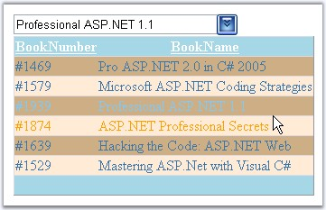

This section discusses the various look and feel settings that can be set for the control to customize the appearance settings in the following topics.
The GenericDropDown control provides pre-defined set of styles that can be applied to your control just on a click of the button. You can set the desired look and feel for the control that includes some popular styles too.
Right-clicking the control and selecting the 'Auto Format...' option opens the following Auto Format dialog box.

Figure 112
The left pane lists the various pre-defined style scheme that are available. The right pane shows the preview of the currently selected scheme. Select the required style and click OK to apply the selected scheme to the control.
Example of a popular look and feel
The following image shows the control with White Brick style setting.

Figure 113
The MultiColumnDropDownControl can be customized by applying various styles properties of the control.
Customizing the DropDown Button
The custom button image can be applied to the control by setting the image name, or the path where the image is stored, to the ButtonImageSrc property.
|
Property |
Description |
|
ButtonImageSrc |
Specifies the path of the custom image to use for the button. |
Programmatically the image for the dropdown button can be added as shown below. Here, the image is stored in the application folder.
|
[C#]
this.MultiColumnDropDownCombo1.ButtonImageSrc = "buton.gif"; |
|
[VB]
Private Me.MultiColumnDropDownCombo1.ButtonImageSrc = "buton.gif" |

Figure 114: Control with custom button image and various styles applied to the dropdown
Styles like fore and back color, font and font settings, and so on, can be easily set just by setting the various Style properties collection.
Items in the dropdown can be customized through style properties of ItemStyle. When AlternatingItemStyles are set, those settings will be applied for the alternative rows of the dropdown, the first row inheriting the ItemStyle settings.
The header and footer settings can be customized through the properties of the HeaderStyle and FooterStyle respectively. Also styles for mouse over and item selection can also be set through HoverItemStyle and SelectedItemStyle properties.
|
Property |
Description |
|
AlternatingItemStyle |
Specifies the styles applied to the alternate items. |
|
FooterStyle |
Specifies the styles applied to the footer. |
|
HeaderStyle |
A collection of styles applied to the header. |
|
HoverItemStyle |
A collection of styles applied to the items on mouse hover. |
|
ItemStyle |
A collection of styles applied to the items. |
|
SelectedItemStyle |
A collection of styles applied to the items in selected state. |